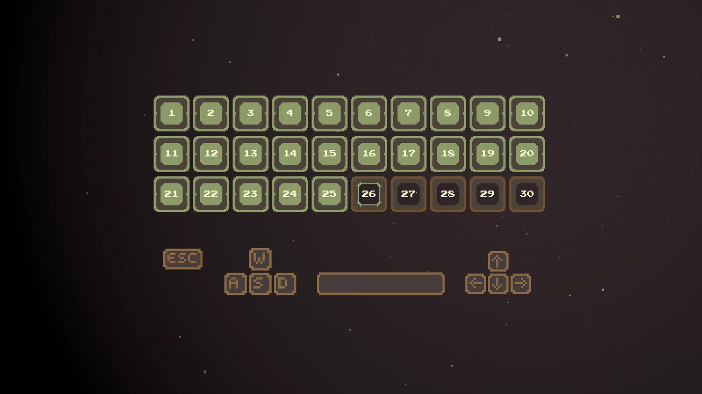

Conclusus
A precision platformer on the HeavyLight base. Thirty short levels, one hit kills, and four mechanics to combine: pins, a shadow you teleport back to, silhouettes and lit platforms.
Playable here. Also on itch.io.
The brief
HeavyLight ran on one mechanic, so its levels carried the whole game. Conclusus does the opposite: four mechanics players already understand, combined a new way in every level.
No puzzles. Levels are short, one hit kills and the retry takes about a second, so the challenge is execution.
- ReadFind the symbol, the door and what kills.
- RunPins, the shadow, the silhouettes. All execution.
- SymbolTouch it and it flies to the door.
- DoorIt opens and the next level fades in.
The controls
The controller is HeavyLight's, untouched: coyote time and a jump buffer of 0.15 seconds each, an apex in 0.4 seconds, and a stop the frame you release the key.
Key and door
Every level hides a spinning symbol and ends at a door. Ten levels split the symbol into three pieces, taken in order.
A symbol in three pieces. Each one is collected in order, and the door opens on the third.
Twenty levels add a second lock: every platform lit at the same moment. A platform lights when you step on it and fades in about five seconds, so the route becomes a race back to the first.
Lighting every platform before the first one goes dark. The door opens on the last.
Pins
A pin snaps you in, cancels your momentum and fires you where it points.
Then it holds your fall for a second, long enough to aim at the next one. Chains of pins are the flying sections.
A chain of pins to the door. Each launch holds the fall for a second.
The shadow
The main mechanic: a checkpoint you place yourself.
The shadow stands on the ledge nearest the pointer, and a click teleports you into it.
Press S on the ground and a green copy of you stays behind. Press S again from anywhere and you are back in it, speed kept. One shadow at a time, unlocked in level 7. Where to plant it is the decision.
Plant the shadow, take the pins up to the symbol, then teleport straight back to it and walk to the door.
The silhouettes
Figures shaped like your shadow, all switching together every 1.2 seconds.
Green is safe: touch one and you teleport into it. Silver kills. The switch never drifts, so a level can be read, timed and learned. Levels 25 to 30 are built on that beat.
A silhouette on every platform, green and silver on one beat.
Thirty levels
Three chapters and no optional content.
The first levels teach jumping and pins. Level 7 gives the shadow, level 16 the double jump and the first silhouettes, and the last six combine everything. HeavyLight's journal, secrets and collectibles were cut on purpose.

The level select: 26 is next, the last four are locked.
Built on HeavyLight
I wrote HeavyLight as a base, and Conclusus was the proof.
The controller, the level switching, the reset and the door logic came over untouched, and the four new mechanics went on top. Thirty levels took less time than the original twenty. The time saved went into the look: one palette, rain in every level, and a bloom that flares at the end of each one.
What it taught me
The shadow, the game's best idea, was found during production.
Since then I prototype the core mechanic first and test it before building levels around it.